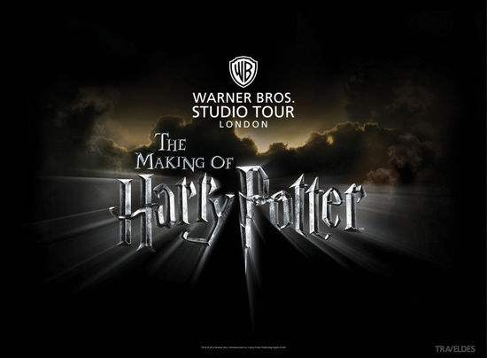

karine
《哈利·波特》（Harry Potter）是英国作家J·K·罗琳（J. K. Rowling）于1997～2007年所著的魔幻文学系列小说，共7部。其中前六部以霍格沃茨魔法学校（Hogwarts School of Witchcraft and Wizardry）为主要舞台，描写的是主人公——年轻的巫师学生哈利·波特在霍格沃茨前后六年的学习生活和冒险故事；第七本描写的是哈利·波特在第二次巫界大战中在外寻找魂器并消灭伏地魔的故事。
《哈利·波特》（Harry Potter）是英国作家J·K·罗琳（J. K. Rowling）于1997～2007年所著的魔幻文学系列小说，共7部。其中前六部以霍格沃茨魔法学校（Hogwarts School of Witchcraft and Wizardry）为主要舞台，描写的是主人公——年轻的巫师学生哈利·波特在霍格沃茨前后六年的学习生活和冒险故事；第七本描写的是哈利·波特在第二次巫界大战中在外寻找魂器并消灭伏地魔的故事。